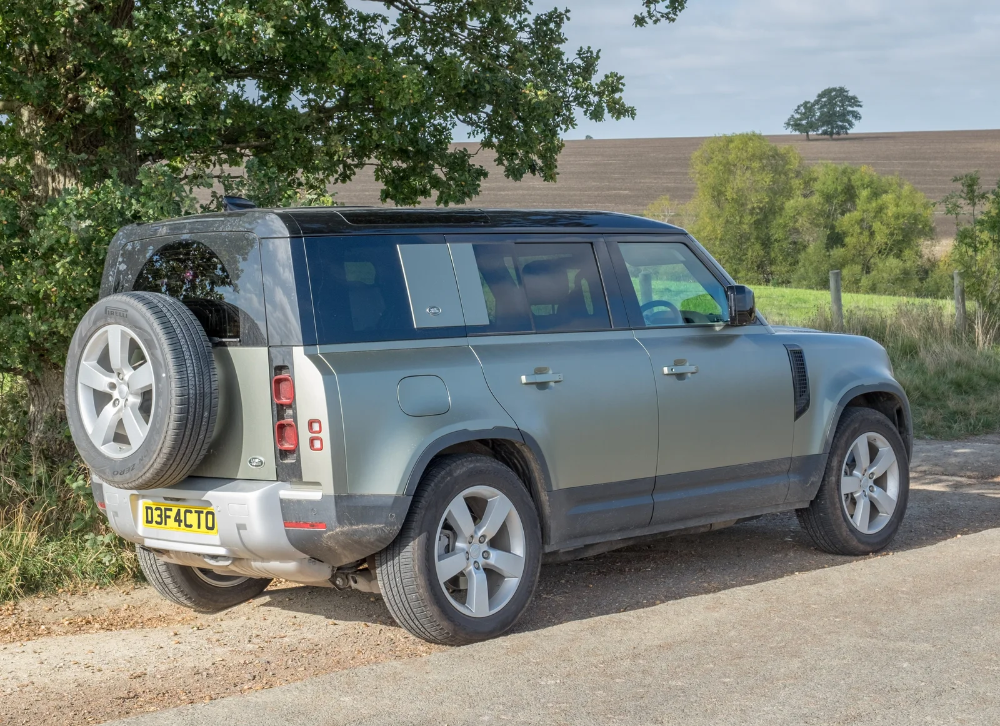

▲ 현대 투싼 등 2개 차종 5만 4,792대가 계기판 소프트웨어 오류로 리콜 대상에 포함됐다 ⓒ Retired electrician, Wikimedia Commons (CC0)
국토교통부가 7월 2일 BYD코리아·메르세데스벤츠코리아·스텔란티스코리아·재규어랜드로버코리아·현대자동차·볼보자동차코리아 등 6개사가 제작·수입·판매한 38개 차종 14만 6,505대에서 제작 결함을 확인했다고 밝혔습니다. 각 제조사는 안전기준 부적합 사실이 확인된 즉시 자발적 시정조치(리콜)에 들어갔으며, 결함 유형은 안전띠 경고 시스템부터 에어백 연결장치, 발전기 내구성까지 다양합니다.
| 제조사 | 대상 차종 | 대수 | 결함 내용 |
|---|---|---|---|
| 볼보 | XC60 등 7개 차종 | 5만 5,405대 | 48V 발전기 부품 내구성 부족 |
| 현대차 | 투싼 등 2개 차종 | 5만 4,792대 | 계기판 제어 소프트웨어 오류 |
| 재규어랜드로버 | 디펜더 110 등 21개 차종 | 1만 4,373대 | 운전대 에어백 연결장치 내구성 부족 |
| BYD | 씨라이언7 등 6개 차종 | 1만 8,091대 | 안전띠 미착용 경고 미표시 |
| 벤츠 | C300 4매틱 | 2,113대 | 운전대 전자장치 제어회로 내구성 부족 |
| 스텔란티스 | 300C | 1,731대 | 주행 중 시동 꺼짐 가능성 |
1. 가장 규모가 큰 볼보·현대차 — 발전기와 계기판 소프트웨어

▲ 볼보 XC60 등 7개 차종 5만 5,405대가 48V 발전기 부품 내구성 부족으로 리콜된다 ⓒ Dinkun Chen, Wikimedia Commons (CC BY-SA 4.0)
이번 리콜 중 가장 규모가 큰 곳은 볼보자동차코리아입니다. XC60 등 7개 차종 5만 5,405대에서 48V 발전기 부속품의 내구성이 부족한 것으로 확인됐는데, 이 결함이 있으면 12V 배터리·엔진 경고등이 켜지고 스타트스톱 기능 작동 시 재시동이 안 될 가능성이 있습니다. 현대자동차는 투싼 등 2개 차종 5만 4,792대가 대상으로, 계기판 제어 소프트웨어 오류로 화면이 깜빡이거나 꺼질 수 있어 7월 6일부터 시정조치를 진행하고 있습니다.
2. 재규어랜드로버·BYD·벤츠·스텔란티스 — 나머지 4개사

▲ 랜드로버 디펜더 110 등 21개 차종 1만 4,373대가 에어백 연결장치 내구성 부족으로 리콜된다 ⓒ DeFacto, Wikimedia Commons (CC BY-SA 4.0)
가장 위험도가 높은 결함은 재규어랜드로버입니다. 디펜더 110 D240을 포함한 21개 차종 1만 4,373대에서 운전대 에어백 연결장치의 내구성이 부족해, 충돌 시 에어백이 정상 작동하지 않을 가능성이 확인됐습니다. BYD는 씨라이언7·아토3·돌핀·씰 등 6개 차종 1만 8,091대가 대상으로, 좌석 안전띠 미착용 경고가 다른 알림에 가려져 보이지 않는 안전기준 부적합 사례입니다. 벤츠 C300 4매틱 2,113대는 운전대 전자장치 제어회로 내구성 부족으로 경음기·버튼이 작동하지 않을 수 있고, 스텔란티스 300C 1,731대는 주행 중 시동이 꺼질 가능성이 발견돼 각각 6월 26일부터 시정조치가 진행되고 있습니다.